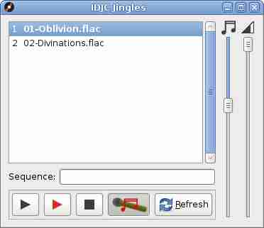

IDJC has two other players which are situated in the Jingles window.
Songs and jingles are added to this window from the pop-up menu of the main players playlist. Once here they remain until removed from the ~/.idjc/jingles folder. Sequences of jingles can be strung together by double clicking on the members of the playlist or by entering their numbers in the sequence box. A comma separated list is the required format. You have two options for playing the sequence. Option one is to press the black play button and option two, the red one. Black reduces the volume on the main player for the duration of the jingles being played. Red completely turns the main players volume control all the way down so that the jingles are heard exclusively.
The other media player is started by the button with the microphone and note icon. What this does is start a continuous loop of audio on just one song that will play constantly and become audible when the main media players are doing nothing. I call it the interlude player and its volume control is the one with the note above it. A good setting for this is half way.
The key bindings for the jingles player are F1 to F12 controlling which jingle to play (they are numbered), and the Escape key which is used as the stop button.
Other Windows In IDJC
Main Window Output Prefs